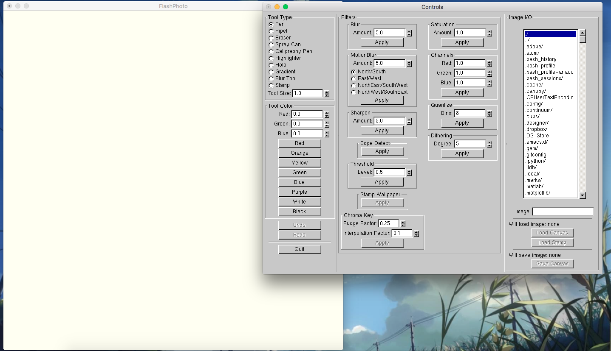

User Tutorial for FlashPhoto
FlashPhoto is a great tool for editing and composing images. This guide will go over how to start using the application to draw pictures and edit photos. After introducing some of the basic features of the application, this guide will walk you through an example project using FlashPhoto’s more advanced image compositing tools.
Getting Started:
When you start up FlashPhoto you should see two windows pop up: the canvas and the control panel . The canvas shows you the image you are currently working on, while the control panel dictates how you will change and affect the canvas.

The leftmost column on the control panel lists all FlashPhoto’s tools. Once selected, tools can be applied using your mouse by clicking on to the canvas. Most tools operate as a kind of brush- they apply color to the canvas. Below the list of tools you will find a series of options that allow you to adjust a tool’s brush size and color.
Making Your First Drawing:
To make the above image, the pen tool was selected, it’s size was set to 5.0, and the purple color button was pressed. If you were to switch to a new tool at this point (such as the calligraphy pen), FlashPhoto would apply the same size and color options to your new tool.
You do not need to choose from the provided selection of colors. Instead you can enter in your desired RGB value, and FlashPhoto will set this to be your new set tool color. By using and then adjusting the preset colors, you can easily tweak your color settings.
You can get the color value of a specific pixel using the Pipet tool. This tool doesn’t change the canvas, instead it collects the RGB value of the pixel it’s applied to. You can use this to copy a color that exists on the canvas. Color can then be removed (to expose the background color) using the Eraser tool.
The above image was made using a variety of FlashPhoto’s different tools. Some easy to see in action, such as the gradient or halo tools. Others may be more subtle, like the Blur tool applied over the word “Photo”, or the Highlighter tool applied over the word “Hello”. If you make a mistake you can always revert a change using the Undo button, located right below the color selection panel. Whenever something changes the canvas, you can undo the change by pressing Undo. Undone changes can be redone via the Redo Button. Once a new change is made to a canvas, any changes waiting to be redone will be lost.Saving Your Drawing:
To the right the drawing that was composed above is saved as my-new-image.jpg.
Loading Images:
The interface used for loading images is very similar to what you used to save your first drawing. Once you navigate to and select your desired JPEG or PNG, you have two options for loading a file: the Load Canvas button and Load Stamp button.
The first button will replace the current canvas with the loaded image. The second saves the loaded image so that can be used for image compositing. This includes the Stamp tool, which applies the saved saved image to the canvas, centered around the mouse. It also includes the Stamp Wallpaper filter, which tiles the loaded image over the canvas.
When you press undo after loading an image, FlashPhoto will revert to the previous canvas. If you were working with a different filename previously, that will be reverted as well.
In the above screenshot, an image of an actor over a green screen was saved to the canvas. Then another image file named “cat_exploitable.png” was loaded as a stamp, and applied in the corner. This illustrates how when a PNG is applied as a stamp, any alpha regions will be see through.
Editing Images With Filters:
The previous section briefly mentioned the Wallpaper filter, but filters themselves were not discussed in detail. A Filter modifies the entire canvas in some way, as opposed to a tool which operates around where the mouse is clicked. The controls for filter lie between the tools and the Image I/O column.
You may already be familiar with some of the other filters, depending on your experience with photo editing. The following is a brief overview of each filter:
- The Blur filter is similar to the blur tool, except that it applies uniformly across the canvas. The amount field controls the extent of blurring.
- The Motion Blur filter simulates just that, motion! This filter smears colors in one of four set directions. The amount field controls the extent of blurring.
- The Sharpen filter makes the differences between colors more pronounced, and acts a counterpoint to blurring an image. The amount field controls the extent of sharpening.
- The Edge Detect filter highlights rapid changes in color. Regions of uniform color will be turned black. The result is often used for diagnostic purposes.
- The Threshold filter converts pixels beyond a certain threshold to either pure white or pure black. The effect accentuates the contrast between light and dark areas of an image. The larger the value set in the amount field, the more of the image that will be converted.
- The Saturation filter modifies difference between colors across your image. The value in the amount field determines the degree of saturation. Values greater than 1.0 will increase saturation, while values between 1.0 and 0.0 will decrease saturation. 0.0 will effectively turn the image into a grayscale version of itself, and negative values will produce an image with negative color values and intensities.
- The Channels filter allows you to emphasize or deemphasize a color value across the image. If the values set for red, green, and blue are all 1.0 then nothing will change. However, if a color component’s value is greater than 1.0 then the intensity of that color component will be increased. If a color component’s value is less than 1.0 then the intensity of that color component will be decreased.
The image above has had its saturation boosted, and then tinted violet using the channel filter. - The Quantize filter simplifies the number of colors component values used by your image to fit within the provided number of bins. The binned colors are evenly distributed across the RGB color spectrum. Each pixel is then adjusted to match its closest binned color.
- The Dither filter works similarly to the Quantize filter, except it uses a technique called Floyd–Steinberg dithering to improve image fidelity despite the lower number of colors. See the linked article for more detail.
 The lower the degree of dithering, the fewer unique colors used, similar to Quantize. The above image compares three versions of the same picture. The leftmost picture is the original, the middle is has been filtered with Quantize and 3 bins, and the rightmost has been filtered with Dither degree 2. The middle and rightmost images have the same number of color component values, but the dithered image looks much closer to the original. Open the full resolution version of the image to get a better idea of dither in action.
The lower the degree of dithering, the fewer unique colors used, similar to Quantize. The above image compares three versions of the same picture. The leftmost picture is the original, the middle is has been filtered with Quantize and 3 bins, and the rightmost has been filtered with Dither degree 2. The middle and rightmost images have the same number of color component values, but the dithered image looks much closer to the original. Open the full resolution version of the image to get a better idea of dither in action.
Combining images using Chroma Key
There are two filters that were not introduced in the previous section. One was already mentioned, the basic Wallpaper filter. The other, Chroma Key, is more advanced. Chroma Key is a widely used technique that allows you to compose two different images together. In FlashPhoto it works by selecting a range of similar colors on the canvas and replacing them with a wallpapered version of the saved stamp image.
The most obvious application is working with green screens. The first step to using Chroma Key is to select the color to be replace. This color will always be same the currently selected color used by FlashPhoto’s tools. The easiest way to select a color to replace is by using the pipet tool.
Once you have your desired canvas and stamp images loaded, and you have selected the color you want to replace, press the Apply button. To illustrate, this guide returns to the green screen image with the actor, clock, and cat, shown earlier.
When first using Chroma Key, you may find that not all of your selected color was replaced. To get a better fit, you may need to adjust Chroma Key’s two parameters.
The first is the Fudge Factor, which determines how sensitively Chroma Key selects similar colors. A fudge factor of 1.0 selects all colors, while a fudge factor of 0.0 selects only exact match colors. For most purposes, you will want to choose a fudge factor closer to 0.0.
The second is the Interpolation Factor. Think of this as an extension of the fudge factor. If a color exists beyond the range of the fudge factor, but within the range of the fudge factor + interpolation factor, the two images will be blended. Similarly to the fudge factor, most useful interpolation factors are close to 0.0. If an interpolation factor is too big you may see an image bleeding through into the other.
By tweaking these two parameters, you can create almost seamless transitions between composed images.